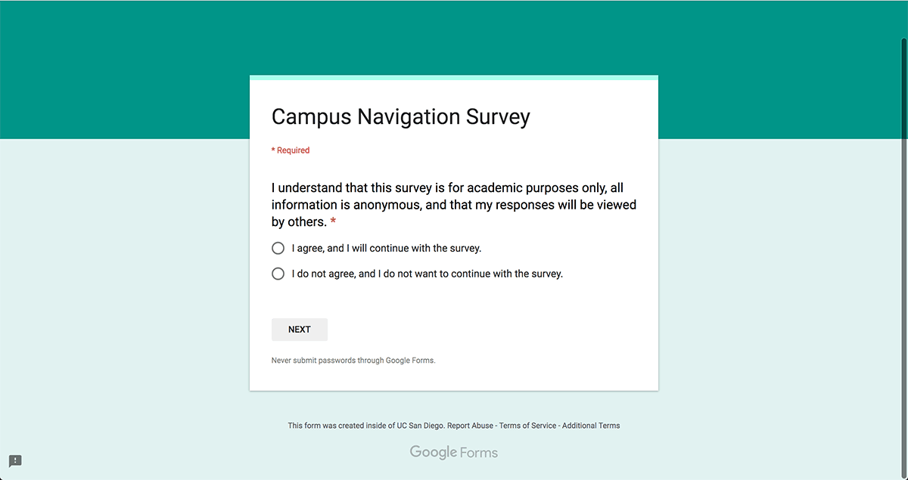
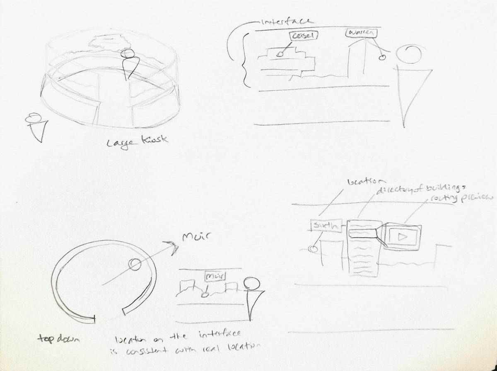

Helmsmen
Project Lead, Designer
A case study into solving problems of navigation at UCSD using human-centered research and design practices.
read the full report backOverview
This was a project with the aim to rely on developing human-centered design practices on a non-digital application. Over the course of a 10 week period, my team and I worked to focus on the problem of navigation, with an emphasis in spatial design.
My team
- Ashkon Honardoost
- Youn 'Alice' Song
- Dev Sharma
- Lam Pham
As the team lead, I was responsible for setting our weekly goals, keeping us on track with our final submission guidelines, all awhile participating in leading many of our interviews and discussions with our user base. I would also facilitate our group discussions, aiding my team members who were new to the design process or looking to develop themselves further.
Design goal
Based on our own experiences and those of individuals we interacted with on the UCSD campus, we saw that navigation for the unfamiliar is very difficult given the scale of the campus.
- No maps are visible
- Misleading signage
- Cannot find buildings/names are blocked
- Every building shares the same address
We identified our stakeholders for research to focus on the student population, breaking this population into classifications; familiar users (mostly upper classmen or those who declare high confidence in campus navigation) and unfamiliar users (newer students).
Every year new student must go through a rite of passage of learning where buildings are located. Year-round the campus hosts many events and attracts people from all over the world which need to learn their way in less time. We set out to tackle this issue with a statement of our intent for the project:
Our goal with this project is to scaffold the learning of navigating around the UCSD campus. We hope to provide a way to allow unfamiliar users to perform on a close level to the familiar users through the quickest, efficient, and most sustainable means.
Simply put, we wanted newcomers to the campus to be able to navigate confidently, with limited interruptions, like someone who knows their way around.
data collection
Our research process is broken down into two main phases; interviews with students, families, and visitors, a day of field research, as well as a survey we posted on UCSD-specific forums.
Interviews
We conducted a total of 5 initial interviews, focusing on current UCSD students, to begin our data collection process. We built a rubric for conducting the interviews with a set of questions:
- Take basic info on people
- Status to the school (current student, prospective, just visiting)
- Been to campus before?
- How do you get where you want to?
- Method of primary transportation
- Bike friendly places? (To park and stuff)
- What did you use to first get an idea of where to go?
- Look it up online?
- Google maps when you got there?
- Maps.ucsd.edu?
- What strategies do you use to get around now?
- Know buildings based on landmarks?
- Know the colleges themselves?
- Still looking up directions online?
- (For students) When you have to get to a new building, how do you find it?
- Are there certain buildings/structures/paths on campus that you still haven’t heard of/visited?
- Are any places harder to navigate than others?
Field Research
We chose a day when families and students would be visiting the campus together, a day designated by the campus for this to give us the largest body of users to observe. We chose several key areas to do our observations; the designated parking lot for the visitors, the shuttle stop they would get off at when entering the center of campus, a point along their route to the information office, and outside the campus information office itself.
We had problems with this time for observing, however. Given this was a campus-hosted event, some work was done to aid the families as they navigated, mudding our observations.
This included stickers on the pathways to guide visitors, guides to walk alongside them to show them the route to take, and a pamphlet which contained a simplified map in it.
Survey
After our initial interviews and field research, we developed a survey which we posted in a UCSD forum aimed at getting the perspectives of current students, prospective students, faculty, or visitors. We received 51 responses on the survey consisting of 1 faculty member, a grad student, 5 prospective students, and the rest of current students of varying seniorities.
An important addition we included in this step in our data collection was the inclusion of our 3 scenario questions. We asked 3 questions which tasked the individual to rely on their mental map of campus in order to provide us directions from 3 distinct starting locations to 3 distinct terminating locations. They each covered a different portion of the campus helping us to get data on those different locales.
We aimed to test a hypothesis about the mental map of users on campus; that they have a landmark-centric map developed in their head which they use to navigate around. For example, it be seen as someone saying the statement 'to get to the library, you have walk past the communications building, turn left at the cognitive science building, and walk straight to the library' where landmarks such as the comm and cog sci building are used in conjunction with a direction.

diagrams
Once we had our data collected, we began a process of diagramming the comments and responses from our collection into affinity diagrams. This process included transcribing the comments, coding them by color, and grouping them into categories. This gave us a visualization of the categories and frequencies of responses in those categories. We ended up with a total of 4 diagrams; 1 for the interview responses, and 3 for the scenario questions we asked in both the interviews and survey.
Interview Responses
Scenario Response 1
Scenario Response 2
Scenario Response 3
Then, to aid us, we developed two 'day in the life' diagrams to give us a routine for our stakeholders which we could use to then give us an idea of where our intervention would come into play.
Person-Person model
The results of our data collection gave us an understanding of the benefits between two people exchanging navigation data, this being the current method in place for our unfamiliar population to learn. For us to want to recreate this, we had to identify the value of this model.
- Landmark-centric directions
- Orientation/Contextual information
- Routes consistent with common practice
- Can give insight into the interiors of buildings
- Directions are in the perspective of the user
- Two-sided interaction, both participate for clarification
ideation
Our potential interventions were broken down into 3 possible solutions where each one was an change to the way our person-person model functions; a map kiosk which provides a new possible model, a buddy system to pair familiar and unfamiliar campus users together in order to recreate our model, and a change to the naming scheme of buildings in order to affect the language in the conversations.
Kiosks
The concept of kiosks is to provide navigational information to users in a format that is more accurate than the current system on campus with the addition of first-person routing information.
Addressing
The campus is broken up into several distinct sections; the 6 campuses, the medical school, campus center, etc. By prefixing rooms and locations with their campus subsection, users can narrow down where their location is.
Buddy System
As our goal is to have unfamiliar act like our familiar users as quickly as possible, we had to entertain the solution of pairing the two together.
Our intuition was that the buddy system would be the most difficult to implement given it relies on one person be able to give their time to showing an individual or several where to go in a catered manner. We also felt that the addressing and kiosk system by themselves might not solve the whole problem but that a solution involving both could be successful.
Person-Kiosk model
We developed a new model for the interaction between person and kiosk in order to determine how well it would help solve our design problem and what features it would need to include to do so.
- Orientation/Context
- Shows map as a panorama of the location
- All destinations are oriented towards the actual position
- Landmark-centric directions
- Shows route alongside landmarks
- Compatible with interior routes
- Shows the route as an animation to prime the user for the route
Kiosk design
The kiosk would be a digital, 360 degree map located throughout campus showing a panorama of the current location with labels for the campus subsections. Users looking for guidance would be able to interact with the map, clicking on labels in order to bring up directories of locations within. Once ready to get directions, a preview of the route is shown in a first-person perspective. Given the shape of the kiosk, users are oriented in the direction of their destination just by facing that point on the map.
prototype 1
We went through 2 rounds of tested prototypes in which we developed a rubric for conducting the test, an interview, and the apparatus we were testing on. The idea we came to in which to test was a 360 degrees mapping kiosk in conjunction with an addressing change for building names.
Apparatus
We built a cardboard prototype involving a panorama of our testing site with sticky note labels for the different campus subsections, pages with additional sticky notes of areas within those subsections, and slideshows of the routing between our location and the four testing destinations.


Protocol:
- Participant is given the list of the four locations (The Forum, Copley Center, Atkinson Hall, and …)
- They choose an option that they are unfamiliar with
- Participant is presented with the panorama displaying sticky notes of the major campus divisions (colleges, center, etc)
- They are tasked with locating their destination in order to navigate there
- While they are completing the task, we will be documenting their interactions (take pictures too)
- Participants can ‘click’ around on sticky notes
- We will replace the sticky notes with additional ones labeled with locations in that area
- Once they find the destination they are tasked with, we will show them the route slideshow
- They are able to go through the routing at their own pace
- Once they are ready, they then have to go to location
- We will be taking photos and notes while they route to the destination
- After they have ended the task, either by reaching their destination or giving up, we will debrief them
We made slideshows to act as the way in which directions would be provided to the user, from a first-person perspective, showing the landmarks they pass along the way.

Prototype 1 Conclusions
After conducting the first round of testing we found that many people struggled in the early stage with which campus subsection to 'click' on in order to get a list of buildings to determine if one of them is their destination. They would use an exhaustive search until they find it. This is what determined for us that the addressing system was necessary. With it, we could remedy this problem, hypothesizing that the time to complete the task would be shorter with it included in the test. In all, we were happy with the results of the testing. Users reported high confidence in being able to then find the location on campus.
prototype 2
On the second round of testing, we made no changes to the apparatus we used but included the new naming scheme for buildings which relies on the campus subsections as a prefix to the existing name.
Naming Scheme
Currently buildings each have a unique name to them. When a student or visitor is given a room to locate, it is given as the building name followed by the number. A problem which occurs is that, with such an expansive campus, that building could be located anywhere. Our new naming scheme prefixes each building by two letter representing the subsection of campus it is located. We gave this as a legend to users during testing since we would expect some familiarity with it;
- Muir - MU
- Marshall - MA
- Revelle - RV
- Sixth - SX
- Warren - WA
- ERC - ER
- School of Medicine - MD
- Scripps Institute - SC
- Rady’s - RD
- Village - VG
- University Center - UC
The change from the first testing to this would be that we would ask a user, instead of looking for 'Atkinson Hall', they would be looking for 'WA-Atkinson Hall' because that building is located in Warren, one of the colleges that makes up the larger UCSD campus.
Testing


We found that the inclusion of the naming scheme did improve an individual's ability to quickly locate the right campus subsection. In fact, users located the correct one on the first try each time. That, paired with the high confidence for navigation we saw repeated, allowed us to call the testing a success.
conclusion
After the 10 weeks of research and design, we developed a solution which has shown to be a successful intervention for the navigation process at UCSD.
Evaluation:
The addition of the naming scheme validated our thoughts that both solutions were required to solve the problem of finding an unfamiliar location. However, difficult to determine whether the participants really learned the language of navigating campus. An interactive map kiosk provides information in an efficient and sustainable manner for unfamiliar users to perform like familiar users, accompanied by powerful visualizations allowing to quickly orient users with new locations.
Future Work
- Accessibility
- How this system works for the visually impaired, physically handicapped population
- Sound inputs and outputs as directions which people can hear
- Locations for the Kiosks
- Maximum traffic, high visibility, and locations that see a lot of navigation problems
- Might have more than one kiosk per location.
- Combination with the UCSD Maps.
- Depict the location of the Kiosks to turn them into landmarks and other zones
- Zoning the campus.
- Feedback with Users and System
- The missing piece from the person-person model we could not ideate on
- What happens after the Kiosk?
- Integration with an app, some way for users to not get lost...again
Reflection
- User feedback has a major role in development and iteration
- Determined several advantageous aspects of a person-to-person interaction regarding information delivery and communication
- Navigation is a really complex problem which involves lots of thought as to how people actually go about it.